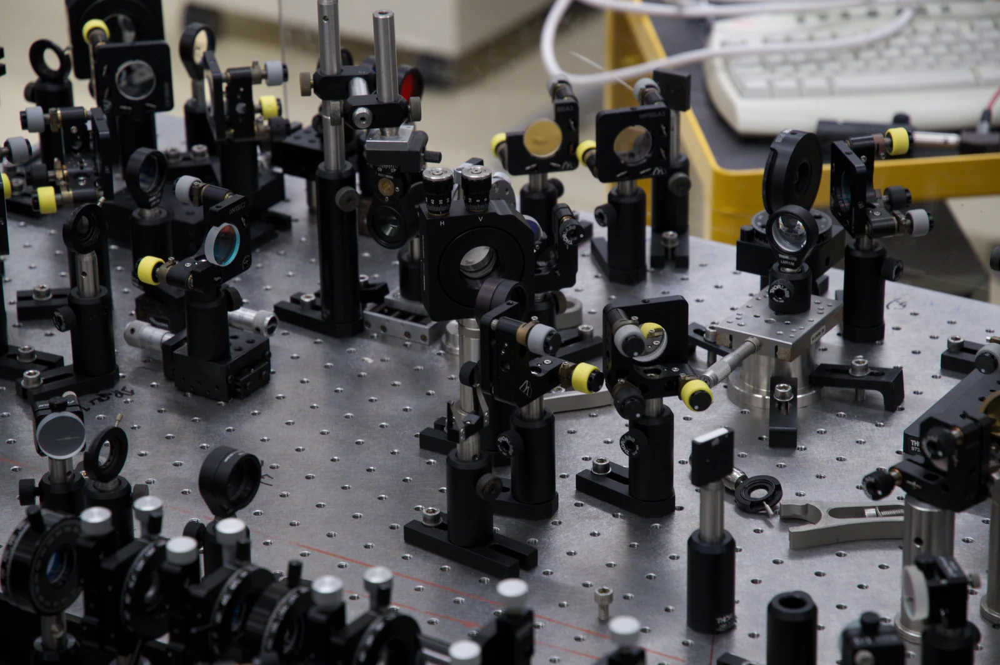
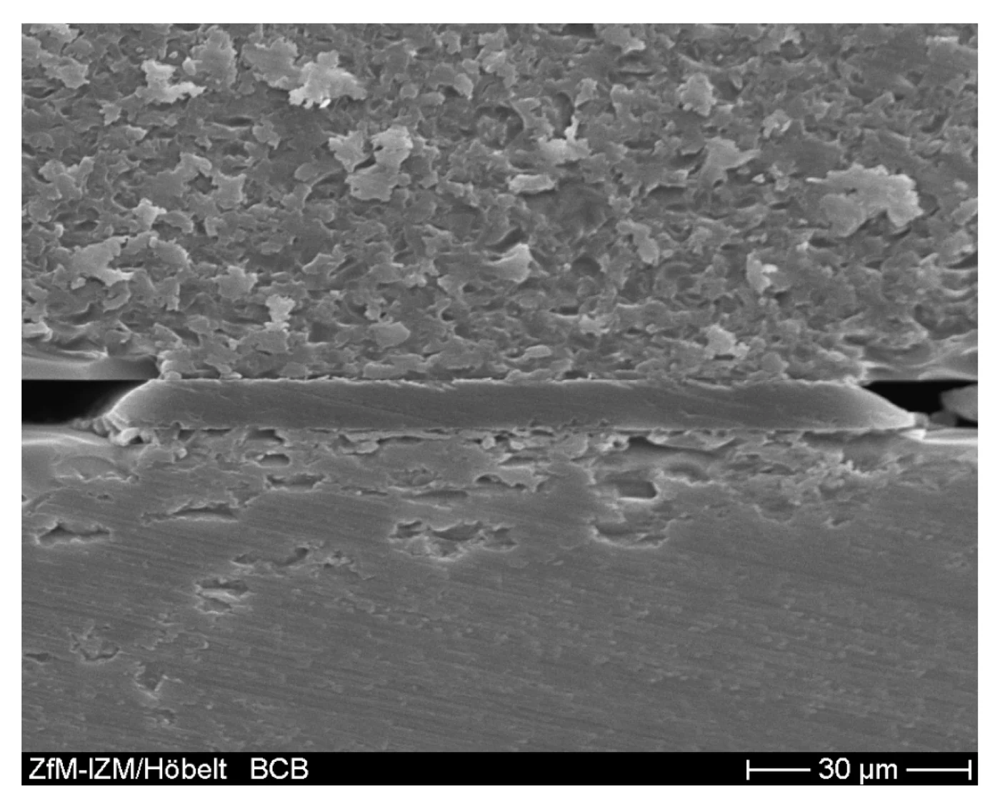
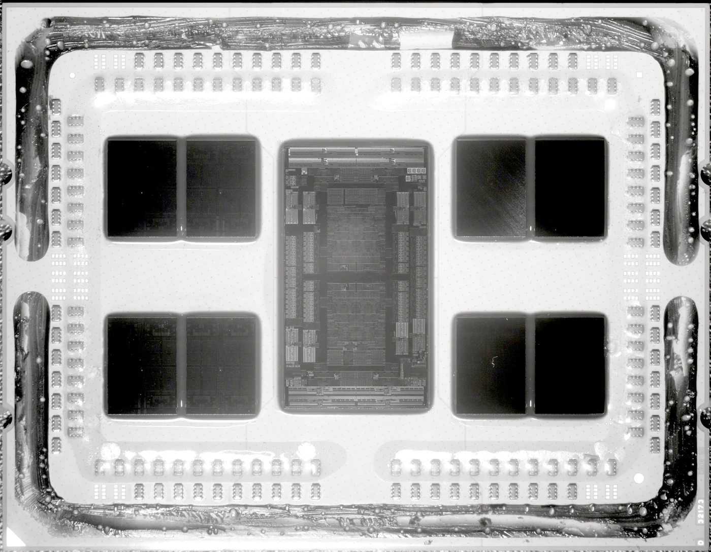
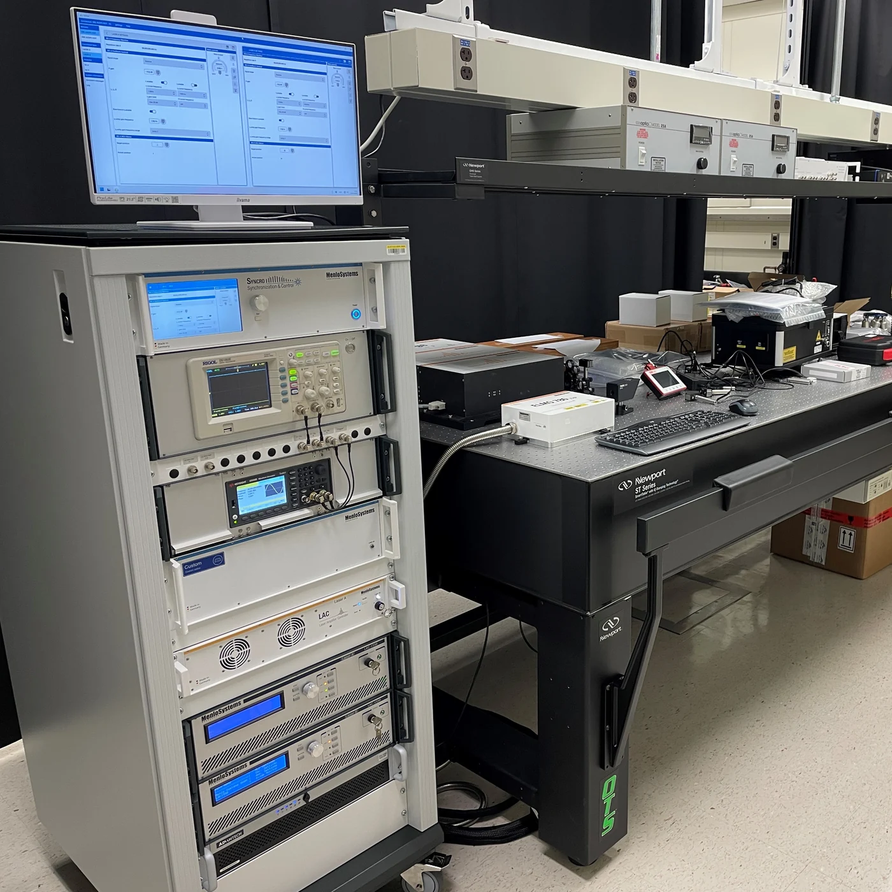
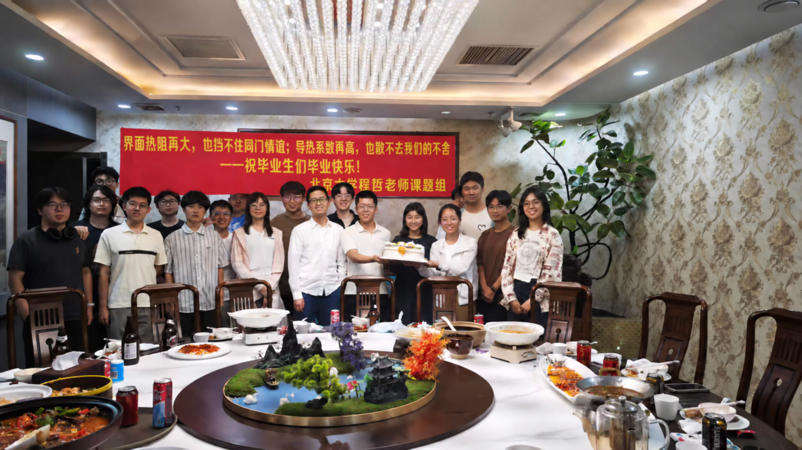

Peking University · School of Integrated Circuits
Thermal Management and Advanced Integration for Future Integrated Circuits
We advance thermal management, heterogeneous integration, and advanced packaging technologies for next-generation integrated circuits through innovations in materials, devices, and thermal characterization.
Engineering the thermal foundations of tomorrow's chips

We focus on thermal management, heterogeneous integration, and advanced packaging for future high-performance integrated circuits.
We address critical thermal challenges in chips with increasing power density, integration density, and reliability requirements, connecting fundamental understanding with measurement techniques and engineering solutions.
Discover our approachResearch focus
From nanoscale interfaces to integrated systems
We investigate the thermal behavior, design, and characterization of complex chip structures across scales.

Thermal transport & interfaces
Micro- and nanoelectronic heat transport, thermal boundary resistance, and semiconductor materials and devices.
02
Heterogeneous integration & packaging
Thermal challenges in high-density integration, 3D stacked chips, and advanced electronic packaging.
03
Thermal characterization & design
Advanced methods for chip thermal characterization, testing, modeling, and optimization.
Photo credits & sources
These external research images illustrate our research themes. They do not depict our facilities or results. Images are resized and cropped for display; the interface micrograph retains its scale bar.
- Pump–probe spectroscopy setup — Maximilian Paradiz · Laser lab · CC BY 2.0
- BCB-bonded wafer interface — Fraunhofer ENAS, D. Neumann · B-ad-crosssectionbcb · CC BY-SA 3.0 DE
- AMD EPYC 7702 chiplet package (near-infrared photograph) — Fritzchens Fritz · AMD Epyc 7702 delidded · CC0 1.0
- NIST TDTR measurement system — Joshua Martin / NIST · Instrumentation · Reuse policy
Measure · model · optimize
A platform for advanced thermal characterization
Our work spans thermal transport in micro/nanoelectronic devices, interface heat transfer, heat dissipation in 3D stacked chips, semiconductor materials growth, and advanced thermal characterization.
View facilitiesPeople & community

A collaborative lab for the next generation of IC researchers
We welcome motivated students and young researchers from integrated circuits, electronic engineering, materials science, physics, mechanical engineering, energy science, and related fields.
Meet our people
Get in touch